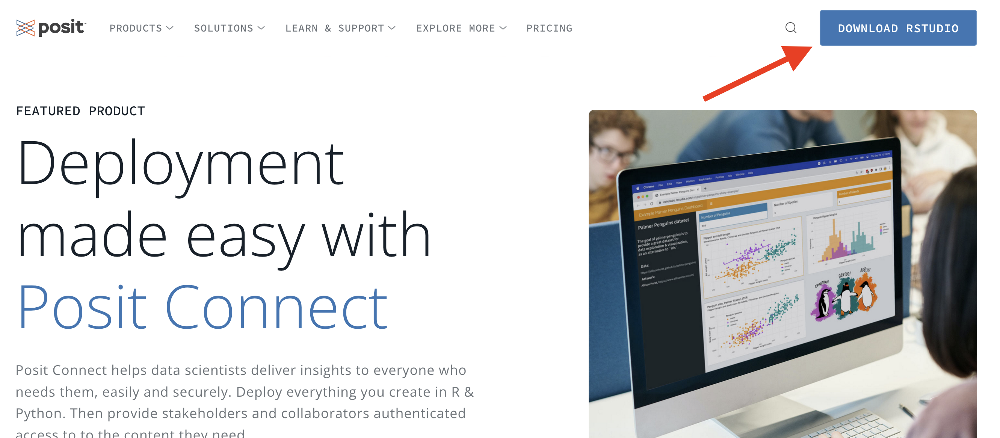
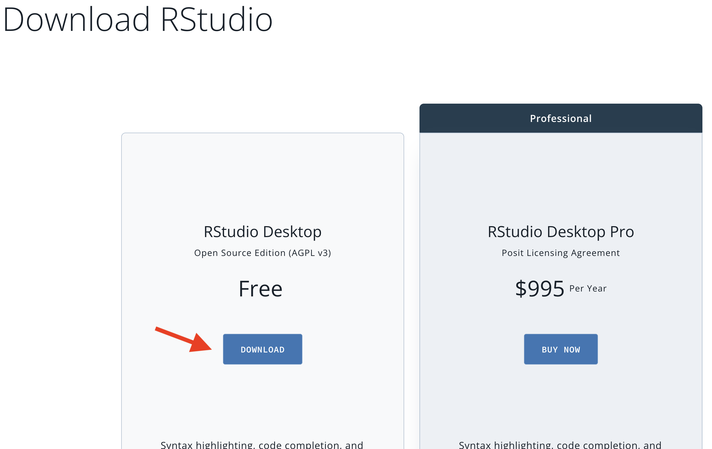
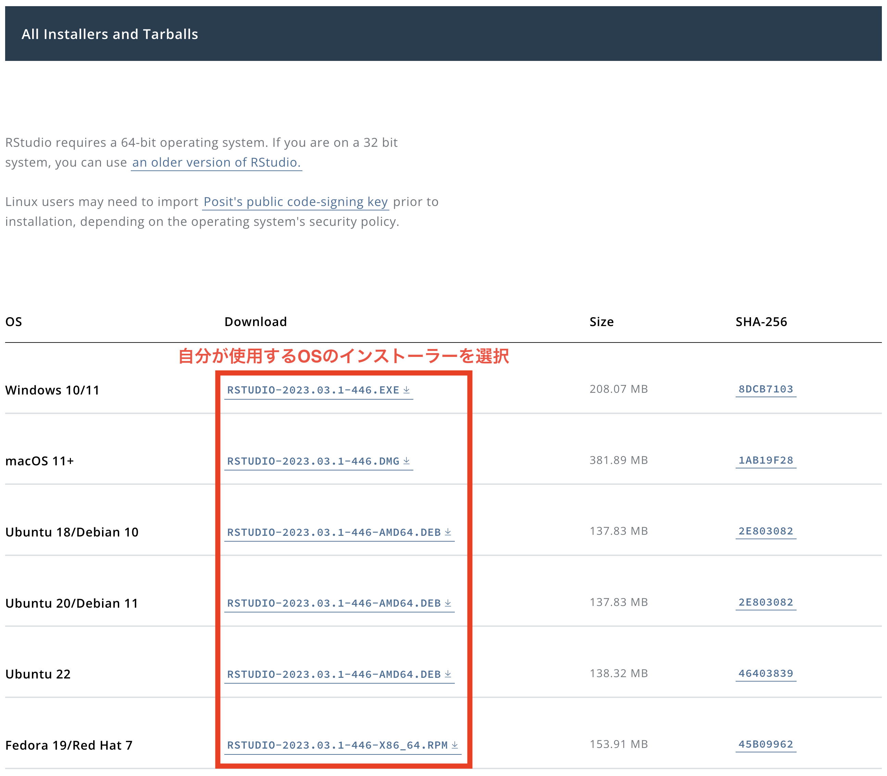
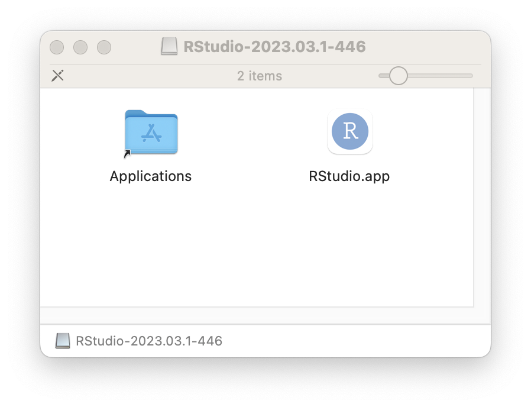

3 IDEの導入
3.1 IDEとは
プログラミングは基本的にコードを書く作業の連続だが、コードを書く他にも様々な作業を行うことになる。たとえば、自分が書いたコードの結果が正しく動作するかの確認作業や、なにか問題がある場合の対処（デバッグ）などがある。また、コードを書く際、誤字やミスなどがないかも確認する必要がある。他にもプログラムで使用されるファイルを管理しなければならない。これらの仕事を手助けしてくれるのが統合開発環境（integrated development environment; IDE）と呼ばれるものである。
プログラマにとって優れたIDEを使うということは、優れた秘書を雇用するようなものだ。ファイルの管理、うろ覚えのコマンドの補完入力、コードの色分けなどを自動的に行ってくれる。さらに、コードの実行結果の画面をコードと同時に表示してくれたり、これまでの作業を記録してくれるなど、多くの作業を手助けしてくれる。Rにはいくつかの優れたIDEが用意されている。本書では代表的なIDEである RStudio を使うことにする。ただし、プログラミングにIDEは必須ではない。IDEをインストールしなくても、本書を読む上で特に問題はない（RStudioに関する説明の部分を除く）が、Rの実行環境に特にこだわりがないならRStudioの導入を強く推奨する。むろん、RStudio以外にも選択肢は多くある。魔界において圧倒的なシェアを誇ると噂されるWindowsという名のOSを使用しているなら、R Tools for Visual Studio もまたRStudioの代替候補の一つだ。
他にも、自分が使い慣れたテキストエディタをIDEとして使うことも可能である。Sublime Text や Atom はむろん、伝統のある Emacs や Vim を使うこともできる。近年、人気のテキストエディターであるVisual Studio CodeをIDEとして使用する人も増えている。


3.2 RStudioのインストール
RStudioはposit社が無料で提供しているRのIDEであり、最も人気のあるIDEだ。以下ではRStudioのインストール手順を画像を示しながら解説するが、posit社ホームページのレイアウトなどは随時変更される可能性がある。以下は画像は2023年6月現在の画像である。
3.2.1 インストーラーのダウンロード
Step 1: positのホームページ（https://posit.co/）へアクセスする。あるいはRStudioダウンロードページ（https://posit.co/download/rstudio-desktop/）へ直接アクセスする。この場合はStep 4へ飛ぶ。
Step 2: 画面右上の「DOWNLOAD RSTUDIO」をクリックする。

Step 3: 画面を下へスクロールし、RStudio Desktopパネルの「Download」をクロックする。

Step 4: 画面を下へスクロールし、自分が使用するOSにインストーラーをダウンロードする。macOSは.dmgファイル、Windowsは.exeファイル、Ubuntu（Debian）なら.debファイルだ。Ubuntu（Debian）の場合、自分のOSはバージョンを確認してからダウンロードすること。画面をもう少し下へスクロールすると、.zipや.tar.gz形式のインストーラーもあるが、こちらは推奨しない。

3.2.2 macOSの場合
ダウンロードした.dmgファイルをクリックすると以下のような画面が表示される。

あとはRStudio.appのアイコンをクリックしたまま、Applicationsフォルダーへ移動させる（ドラッグ・アンド・ドロップ）だけだ。すでにRStudioがインストールされている場合は上書きするかと聞かれるが、そのまま上書きしても問題ない（既存のRStudioの設定は引き継がれる）。
3.2.3 Linux（Ubuntu）の場合
.debファイルのインストールは、ターミナルを使う必要がある。たとえば、ダウンロードしたインストーラーのファイル名がrstudio-2023.03.1-446-amd64.debであり、Downloadフォルダーに保存されていると仮定する。ターミナルを開き、以下のように入力する。
$ cd Downloads
$ sudo apt install rstudio-2022.02.0-443-amd64.deb- 1
-
Downloadフォルダーへ移動 - 2
-
rstudio-2023.03.1-446-amd64.debファイルを管理者権限（sudo）でインストール（apt install）する。
もし、gdebiがインストール済みならnautilus (UbuntuベースのディストリビューションであるLinux MintならNemo/Caja)で.debファイルをダブルクリックしてインストールすることもできる。
3.2.4 Windowsの場合
Windowsの場合、ダウンロードしたファイル（たとえば、RStudio-2023.03.1-446.exe）を開き、指示に従うだけでインストールできる。基本的に「はい」、「次へ」をクリックするだけで良い。